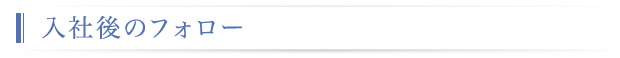

■新入社員教育
新入社員は、入社後2ヶ月間はビジネスマナーやシステム開発技術の基礎的なことを学びます。 その後各部署に配属され、引き続きOJTの一環として通常業務をこなしながら 仕事の進め方なども含めてソフトウェアの開発手法を繰り返し学び、 1年後にはプロの技術者として育て上げるプログラムが組まれています。
| 4月 | 集合研修 |
以下のことを中心として講習を進めていきます。
・プレゼンテーションの基本スキル ・ソフトウェア基礎 ・プログラミング講習(Java,VB,PL/SQL,C++等 配属先または年次により異なる) |
|
| 5月 | |||
| 6月 | Ｏ Ｊ Ｔ 研 修 |
OJT面談 | 配属先のトレーナーとの面談後、他部署のプロジェクトリーダーと面談します。 技術面だけでなく、その他の問題などあれば直属の上司に言いにくいことでも相談できる機会でもあります。 |
| 7月 | |||
| 8月 | |||
| 9月 | OJT面談 | ||
| 10月 | 社外研修 | 打ち合わせでの意見のまとめ方、プレゼンテーションの手法などを学びます。 | |
| 11月 | |||
| 12月 | OJT面談 | ||
| 1月 | |||
| 2月 | |||
| 3月 | まとめ研修OJT面談 | 1年間の総まとめです。1年間携わってきた仕事の概要をプレゼンテーション形式で発表します。 発表内容について話し合う時間を持ち、その中で仕事の進め方を改めて整理します。 また、翌年からの後輩への指導方法なども学びます。 |
|
■2年目以降の教育・その他
★3年目研修(年2回)
入社3年目で仕事に充分慣れてきたところで、SEになるため、SEとしてやっていくための研修を行います。
【今までの事例】
システム概要設計書の作成及びプレゼンテーション
プロジェクトチーム運営のケーススタディ
インシデント・プロセスによる問題発見、問題分析、意思決定の能力向上
★部内合宿・勉強会(年2回)
部署ごとにテーマを決め勉強会を開きます。ケーススタディ、HP作成、社内システム開発など内容はさまざまです。
HP作成や社内システム開発のように時間のかかるものは、半年ほどかけてチームごとに作成し、成果物を競い合うこともあります。
【今までの事例】
会社HPおよび社内イントラネット開発
WPC EXPO見学及び見学を踏まえての新ビジネス提案
EBS（Oracle E-Busines Suite）によるセキュリティ実現方法の検証
それぞれの得意分野をプレゼンテーション形式で講習